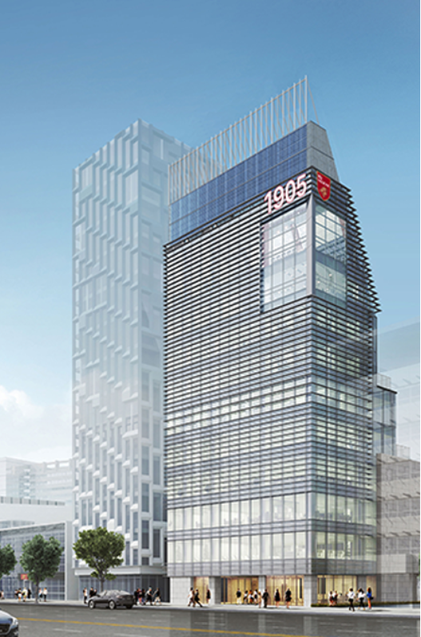

Instructors who
worked with me
김태유

김건수

조민식

이행규

이중규

최은영

서아론

이영완

정혜윤

이병건

(Intro)
고려대학교 보건대학원에서는 특별한 최고위과정을 운영하고 있습니다.
최근 인공지능, 빅데이터, 클라우드와 같은 지능정보기술의 발전으로 전통 의료 헬스케어 산업의 디지털 전환을 맞이하고 있습니다. IT 기술과 접목한 디지털 헬스 관련 시장은 2020년 기준으로 1,520억 달러, 2027년에는 5,080억 달러 규모로 성장할 것으로 예측되고 있습니다.
유전체의학과 바이오 산업도 급속도로 팽창하고 있습니다. 이에 고려대학교 보건대학원은 5차 산업혁명 시대를 앞두고 우리나라의 성장을 주도할 중요한 미래의료산업과 접목하여 헬스테크의 혁신적인 비즈니스를 만드는 방법을 교육하고 제시하고자 합니다. 헬스케어 기업의 코스닥 상장 전략, 임상시험과 기기 개발에서 대형병원 활용하기, 기술특허상장 평가를 위한 전략, 바이오헬스 산업의 글로벌 동향과 발전방향 등 다채로운 프로그램으로 구성되어 있습니다.
분야별 최고 전문가를 모셔서 강좌를 열고, 토론하는 시간을 가집니다. 지식과 지혜의 교류장 역할과 더불어 원우회 활동을 통하여 인적 네트워크를 형성할 수 있는 자리에 미래 헬스케어 분야의 글로벌 리더가 되고 싶은 분은 함께해 주시기 바랍니다.

강의일정
김태유
09.10(화)
바이오 혹한기에 성공 상장한 노하우
김건수
09.24(화)
기업의 코스닥 상장과 성장 전략
정은영
10.01(화)
우리나라 보건산업 혁신과 정책방향
이행규
10.15(화)
IPO 성공을 위해 CEO가 알아야 할 8가지